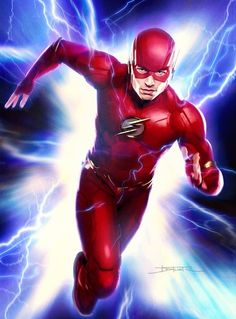

MEDIA

The Flash(2014)
Barry Allen is a Central City police forensic scientist with a reasonably happy life, despite the childhood trauma of a mysterious red and yellow lightning killing his mother and framing his father. All that changes when a massive particle accelerator
accident leads to Barry being struck by lightning in his lab. Coming out of coma nine months later, Barry and his new friends at S.T.A.R labs find that he now has the ability to move at superhuman speed. Furthermore, Barry learns
that he is but one of many affected by that event, most of whom are using their powers for evil. Determined to make a difference, Barry dedicates his life to fighting such threats, as The Flash. While he gains allies he never expected,
there are also secret forces determined to aid and manipulate him for their own agenda.
Separately, DC Super Heroes like Superman, Batman, Wonder Woman, Flash and Green Lantern are the greatest fighters for truth and justice the world has ever known. Collectively, however, they are a force of nature, leaders of a team of heroes who are only
rivaled by the pantheons of gods from ancient mythology—the Justice League. The League is the earth’s first line of defense against threats too large for humanity to face alone.
